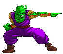

Special Beam Cannon (LV1~2)
His most famous move. This Super is chargeble.
Piccolo puts his two fingers to his forehead, channeling all his latent energy into them.
There are three stages to this move, each becoming available as you charge it up longer
and this will drain up to another Lv1 from your Power Bar,
meaning in total you need Lv2 to achieve the maximum version, which is unblockable.
If you run out of Power Bar before reaching the maxiumum
(if you only have Lv1 plus a little bit, for instance) then Piccolo will fire it automatically.
Upon releasing the Punch button, Piccolo fires the Beam Cannon manually.
Get one of the Clones out to pin down the opponent so you have the time to charge it up to the maximum!
There's a special version when cancelled into from his Destructive Wave to allow it to combo, though that'll only work if you fire it immediately without charging up.
There's a special version when cancelled into from his Destructive Wave to allow it to combo, though that'll only work if you fire it immediately without charging up.


Dead End (LV1) (launches)
Upon activation, Piccolo goes into a charging state.
if the opponent hits him with a physical attack during this state, Piccolo bursts into a radial explosion,
knocking anyone he hits up into the air. Piccolo will also automatically perform the explosion
after a certain amount of time. If you don't hold the punch button,
he'll perform the explosion right away, though it'll be less damaging then.
If he's hit by a projectile attack however, he's knocked out of the move,
but you can use the explosion to destroy incoming projectile attacks.
Works great as an anti-air. If he's hit by an opponent attacking from the air,
the explosion will do an additional hit.

Dark Lord's Army - AI clones (LV1 / LV2)
Piccolo can create a clone of himself at the cost of 150 health points. The clone will have 200 HP.
This clone is AI controlled. When a Clone's KO'd, the health it cost Piccolo to produce him is gone.
A Clone can be created no matter how little health you have left. But there's a two Clone limit;
you'll be unable to create another until one of them has been destroyed.
Creating a second clone (while the first is still onscreen) is also pricier; it'll cost you 200 health but it now requires a Lv2 Power Bar instead of Lv1.
Clones die instantly from getting hit by (most) Supers to prevent any issues it might otherwise cause.
There are three Clone variants, produced by the different punch buttons:
-Weak Punch: 'Defensive' Clone. He will stick close to the real Piccolo and attack with Destructive Wave and Carnage Blitz. He's got your back.
-Medium Punch: 'Melee' Clone. Quite offensive and mostly throwing out basic attacks. Probably your best buddy to sandwich-combo the opponent with (Create it and then jump to the other side of the opponent).
-Strong Punch: 'Jumping' Clone. Regularly jumps and attacks, thus preventing the opponent from doing so. How does one plan to stop these clones?
When Clones are out, you can choose to re-absorb the clone and regain their remaining health. If you create a clone and instantly reabsorb it, you'll get a 50 HP bonus. The command for Re-absorbtion is QCF,b+any punch. When you have two Clones out, these callback commands even have different properties:
QCF,b+LP calls back the Lv1 Clone.
QCF,b+MP calls back the Lv2 Clone.
QCF,b+SP calls back both Clones at once.
When you have created 2 Clones (a Lv1 and then a Lv2) and one of them is killed off, leaving one behind, you're able to create a new buddy for that remaining Clone for 200 Health and only Lv1 Power Bar. Basically if you have a LV1 Clone left, the next one you make will be a Lv2 one and vice-versa.
Pressing Start/Taunt will during a combo will make a Clone stop fighting, so they won't mess up your combo. They will sit back until the enemy has recovered, then they'll resume their assault.
Lastly, a Clone is also able to perform a Special Beam Cannon with the command QCB,f+P, required 1 super bar stock. They'll automatically charge it up to the maximum and then fire it! QCFx2+LKP activates the SBC for Clone 1, and QCFx2+K does so for Clone 2. When you've got 2 Clones on-screen and a Lvl2 power bar; QCFx2+SK will activate the SBC for BOTH clones simultaneously!
In his config. file, you are able to change the Clones to Helpertype - Player, which might result in a better experience when Piccolo is put in a Mugen build that's not HDBZ. For those who have slower computers; you're also able to disable the Clone Split move entirely as they are prone to cause lag.
There are three Clone variants, produced by the different punch buttons:
-Weak Punch: 'Defensive' Clone. He will stick close to the real Piccolo and attack with Destructive Wave and Carnage Blitz. He's got your back.
-Medium Punch: 'Melee' Clone. Quite offensive and mostly throwing out basic attacks. Probably your best buddy to sandwich-combo the opponent with (Create it and then jump to the other side of the opponent).
-Strong Punch: 'Jumping' Clone. Regularly jumps and attacks, thus preventing the opponent from doing so. How does one plan to stop these clones?
When Clones are out, you can choose to re-absorb the clone and regain their remaining health. If you create a clone and instantly reabsorb it, you'll get a 50 HP bonus. The command for Re-absorbtion is QCF,b+any punch. When you have two Clones out, these callback commands even have different properties:
QCF,b+LP calls back the Lv1 Clone.
QCF,b+MP calls back the Lv2 Clone.
QCF,b+SP calls back both Clones at once.
When you have created 2 Clones (a Lv1 and then a Lv2) and one of them is killed off, leaving one behind, you're able to create a new buddy for that remaining Clone for 200 Health and only Lv1 Power Bar. Basically if you have a LV1 Clone left, the next one you make will be a Lv2 one and vice-versa.
Pressing Start/Taunt will during a combo will make a Clone stop fighting, so they won't mess up your combo. They will sit back until the enemy has recovered, then they'll resume their assault.
Lastly, a Clone is also able to perform a Special Beam Cannon with the command QCB,f+P, required 1 super bar stock. They'll automatically charge it up to the maximum and then fire it! QCFx2+LKP activates the SBC for Clone 1, and QCFx2+K does so for Clone 2. When you've got 2 Clones on-screen and a Lvl2 power bar; QCFx2+SK will activate the SBC for BOTH clones simultaneously!
In his config. file, you are able to change the Clones to Helpertype - Player, which might result in a better experience when Piccolo is put in a Mugen build that's not HDBZ. For those who have slower computers; you're also able to disable the Clone Split move entirely as they are prone to cause lag.
Dark Lord's Army - mirror clones (LV1 / LV2)
A lot of aspects of the other Clones super are carried over here, things regarding health and power use, etc.
The main difference is the Clones' behavior. Rather then moving independantly through an AI, these Clones will copy your exact movements.
-an LK Clone will stay behind you and copy your exact movements and attacks instantly.
-an MK Clone will do the same, but do so with a slight delay.
-an SK Clone will do so without delay, and in addition to that he will always try to teleport behind the enemy, so you attack from both sides.
A few things work differently from the AI Clones. One of them is the portion about the Special Beam Cannon. Because in this case, they will just copy you doing it. The other is the Call-back command. That won't work with these. Instead, these Clones will act time-based.
-an LK Clone will stay behind you and copy your exact movements and attacks instantly.
-an MK Clone will do the same, but do so with a slight delay.
-an SK Clone will do so without delay, and in addition to that he will always try to teleport behind the enemy, so you attack from both sides.
A few things work differently from the AI Clones. One of them is the portion about the Special Beam Cannon. Because in this case, they will just copy you doing it. The other is the Call-back command. That won't work with these. Instead, these Clones will act time-based.
Seeking Bullet (LV2)
Piccolo fires out a powerful energy beam which is launched out of the screen
after hitting the opponent (or even when they block or dodge it)
and then Piccolo directs it to come back, hitting the opponent from behind for a second string of hits
before smashing onto the ground where it causes an explosion which hits OTG (Off The Ground).
When the opponent is being hit by the beam on the way back, you can hit them with an anti-air move
(actually only the Mental Shock and the Dead End will hit).
While a Seeking Bullet is onscreen, you are unable to fire another. Power Charge is temporarily disabled as well. All in hopes of keeping a bit of balance.
While a Seeking Bullet is onscreen, you are unable to fire another. Power Charge is temporarily disabled as well. All in hopes of keeping a bit of balance.


Hellzone Grenade (LV3)
After charging energy into both of his hands,
Piccolo then unleashes a volley of Ki orbs into the air.
These form an omnious cloud above the players, but these blasts can't harm
the opponent. That is, until you perform the secundary command
which shoots all the blasts towards the opponent! Once they're hit by any of
the incoming blasts, they'll be trapped and are treated to a big barrage
of Ki orbs hitting them. At the end, Piccolo catches them with a Demon Choke.
The incoming blasts are blockable. If you don't perform the secondary command, the blasts will fire at the opponent regardless after 15 seconds.
While in Demon Mode, you can add Trap Blasts to the Ki cloud as you please and these will be added to the hits of the Hellzone Grenade when you fire it.
When performed during Demon Mode, it has three possible Finishers (replacing the Demon Choke) depending on how far the Demon Bar is filled;
Lv1 - Light Grenade.
Lv2 - Mafuba Seal.
Lv3 - Giant Demon.
The incoming blasts are blockable. If you don't perform the secondary command, the blasts will fire at the opponent regardless after 15 seconds.
While in Demon Mode, you can add Trap Blasts to the Ki cloud as you please and these will be added to the hits of the Hellzone Grenade when you fire it.
When performed during Demon Mode, it has three possible Finishers (replacing the Demon Choke) depending on how far the Demon Bar is filled;
Lv1 - Light Grenade.
Lv2 - Mafuba Seal.
Lv3 - Giant Demon.